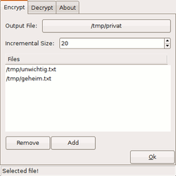

Elettra
Dieser Artikel wurde für die folgenden Ubuntu-Versionen getestet:
Ubuntu 14.04 Trusty Tahr
Zum Verständnis dieses Artikels sind folgende Seiten hilfreich:
 Elettra
Elettra  ist ein Kommandozeilenprogramm zur Verschlüsselung von Dateien. Es existiert aber auch eine graphische Oberfläche für das Programm. Das Besondere an Elettra ist, dass es einem die Möglichkeit gibt, mehrere Dateien wie zum Beispiel "Geheim.txt" und "Unwichtig.txt" zu verschlüsseln (AES-128) und gleichzeitig zu packen und gemeinsam in ein verschlüsseltes Archiv zu stecken. Dabei benutzt man für beide Dateien ein unterschiedliches Passwort.
ist ein Kommandozeilenprogramm zur Verschlüsselung von Dateien. Es existiert aber auch eine graphische Oberfläche für das Programm. Das Besondere an Elettra ist, dass es einem die Möglichkeit gibt, mehrere Dateien wie zum Beispiel "Geheim.txt" und "Unwichtig.txt" zu verschlüsseln (AES-128) und gleichzeitig zu packen und gemeinsam in ein verschlüsseltes Archiv zu stecken. Dabei benutzt man für beide Dateien ein unterschiedliches Passwort.
Wird man nun zum Beispiel von einem Richter dazu gezwungen, das Passwort für das verschlüsselte Archiv herauszugeben, gibt man nur das Passwort für "Unwichtig.txt" heraus, und die Datei "Geheim.txt" ist weiterhin sicher. Es ist aufgrund von bestimmten mathematischen Eigenschaften und der Benutzung von Padding Bytes unmöglich herauszufinden, wieviele Dateien sich innerhalb eines solchen Archivs befinden. Das eingesetzte Verfahren ist demjenigen des "Hidden Volume" von TrueCrypt sehr ähnlich.
Das Programm ist eine Antwort auf den im Jahr 2000 in England erlassenen RIP-Act (der bis in die Gegenwart gültig ist), mit dem ein Richter einen Beschuldigten dazu zwingen kann, Passwörter für verschlüsselte Daten herauszugeben. Das Programm zeigt die Nutzlosigkeit dieses RIP-Acts angesichts der Verfügbarkeit entsprechender Programme und wurde erstmals in der 65. Ausgabe des phrack-Magazines vorgestellt.
Installation¶
Elettra befindet sich nicht in den offiziellen Paketquellen und muss deswegen entweder über ein "Personal Packages Archiv" (PPA) [1] oder von Hand kompiliert und installiert werden.
PPA¶
Adresszeile zum Hinzufügen des PPAs:
ppa:aasche/elettra
Hinweis!
Zusätzliche Fremdquellen können das System gefährden.
Ein PPA unterstützt nicht zwangsläufig alle Ubuntu-Versionen. Weitere Informationen sind der  PPA-Beschreibung des Eigentümers/Teams aasche zu entnehmen.
PPA-Beschreibung des Eigentümers/Teams aasche zu entnehmen.
Damit Pakete aus dem PPA genutzt werden können, müssen die Paketquellen neu eingelesen werden.
Nach dem Aktualisieren der Paketquellen kann folgendes Paket installiert werden [2]:
elettra (ppa)
 mit apturl
mit apturl
Paketliste zum Kopieren:
sudo apt-get install elettra
sudo aptitude install elettra
Manuell¶
Vor der manuellen Installation müssen die folgenden Pakete installiert werden:
cmake
build-essential
libmhash-dev
zlib1g-dev
libmcrypt-dev (universe)
mit apturl
Paketliste zum Kopieren:
sudo apt-get install cmake build-essential libmhash-dev zlib1g-dev libmcrypt-dev
sudo aptitude install cmake build-essential libmhash-dev zlib1g-dev libmcrypt-dev
Hinweis!
Fremdsoftware kann das System gefährden.
Danach lädt man sich den Quellcode ("C source") von der Website  herunter und entpackt [3] das Paket. Jetzt wechselt man im Terminal [4] in das Verzeichnis und dort in das Unterverzeichnis src:
herunter und entpackt [3] das Paket. Jetzt wechselt man im Terminal [4] in das Verzeichnis und dort in das Unterverzeichnis src:
cd elettra/src
und erstellt dort den Ordner build, in den man danach hineinwechselt:
mkdir build cd build
Jetzt kann man mit den folgenden zwei Befehlen das Programm konfigurieren und kompilieren:
cmake .. make
Die ausführbare Datei liegt nun im build-Ordner in dem man sich befindet und hat den Namen elettra. Um das Programm nun bequem systemweit aufrufen zu können, verschiebt man die Datei mit folgendem Befehl nach /usr/local/bin/:
sudo mv elettra /usr/local/bin
Benutzung¶
Nun kann man Elettra im Terminal [3] mit dem Befehl:
elettra
aufrufen und bekommt eine kurze Beschreibung über die Funktionsweise angezeigt:
./elettra by julia@winstonsmith.info, https://www.winstonsmith.info/julia cryptography is free, improver security and doesn't give problem. for this reason, is better use when you could ./elettra encrypt outputfile [size increment]% plainfile[::password] ./elettra decrypt cipherfile [password] [output directory] ./elettra checkpass password(s) ./elettra example (show examples of use) - passwords, if not available, is ask with echo of
Elettra unterstützt im Moment vier unterschiedliche Parameter zur Verschlüsselung (encrypt), Entschlüsselung (decrypt), zum Überprüfen der Passwörter (checkpass) und zum Anzeigen von ein paar Beispielen (example).
Anzeigen von Beispielen¶
Durch folgenden Befehl kann man sich einige Beispiele zur Benutzung von Elettra anzeigen lassen:
elettra example
Überprüfen von Passwörtern¶
Hinweis:
Passwörter müssen jeweils mindestens 6 Zeichen lang sein.
Damit die unterschiedlichen Dateien wirklich unsichtbar sind, ist es wichtig, dass es nicht zu Kollisionen bei der Verschlüsselung kommt. Deswegen sollte man die Passwörter vor ihrer Benutzung überprüfen. Dies geht mit dem Befehl:
elettra checkpass PASSWORT1 PASSWORT2 ...
Will man zum Beispiel für Datei Nr.1 das Passwort "Thei7ooL" verwenden und für Datei Nr.2 das Passwort "AiMeeS8t", überprüft man mit folgendem Befehl, ob die beiden Passwörter gut sind:
elettra checkpass Thei7ooL AiMeeS8t
Eine positive Ausgabe sieht in ungefähr so aus:
password(s) combinations work ok, atleast with password block of 3072 bytes
Eine negative Ausgabe so:
your passwords CANNOT cooperate, try other sequence and avoid password duplication
Verschlüsselung¶
Man verschlüsselt Dateien mit diesem Befehl:
elettra encrypt AUSGABEDATEI PADDINGBYTES% DATEI1::PASSWORT1 DATEI2::PASSWORT2 ..
Will man zum Beispiel die Datei wichtig.txt mit dem Passwort "Thei7ooL" und die Datei unwichtig.txt mit dem Passwort "AiMeeS8t" verschlüsseln und dem Archiv den Namen ergebnis geben, lautet der Befehl:
elettra encrypt ergebnis 20% wichtig.txt::Thei7ooL unwichtig.txt::AiMeeS8t
Wieviel Prozent Padding Bytes man hinzufügen möchte ist dabei egal. Ob 10%, 20% oder 100% macht keinen großen Unterschied. Diese Option sichert aber, dass man dem Richter sagen kann, man hat zum Beispiel 100% Padding Bytes angegeben und deswegen ist das Archiv so groß.
Entschlüsselung¶
Man entschlüsselt nun eine Datei mit dem Befehl:
elettra decrypt AUSGABEDATEI PASSWORT
Um also aus dem Beispiel oben die Datei unwichtig.txt zu entpacken, lautet der Befehl:
elettra decrypt ergebnis AiMeeS8t
Es gibt keine Möglichkeit festzustellen, dass sich neben dieser Datei auch noch zusätzlich die Datei wichtig.txt im Archiv befindet.
Deinstallation¶
Um das Programm zu deinstallieren, muss man nur die ausführbare Datei wieder löschen:
sudo rm /usr/local/bin/elettra
Graphische Oberfläche¶

PPA¶
Das folgende Paket kann aus dem gleichen PPA wie oben angegeben installiert werden:
elettra-gui (ppa)
mit apturl
Paketliste zum Kopieren:
sudo apt-get install elettra-gui
sudo aptitude install elettra-gui
Manuelle Installation¶
Um eine englischsprachige grafische Oberfläche für Elettra kompilieren zu können, muss man zuvor das folgende Paket installieren [1]:
libwxgtk2.8-dev (universe)
mit apturl
Paketliste zum Kopieren:
sudo apt-get install libwxgtk2.8-dev
sudo aptitude install libwxgtk2.8-dev
Außerdem muss Elettra - wie oben beschrieben - installiert worden sein und die ausführbare Datei elettra muss in einem ausführbaren Pfad wie /usr/local/bin/ liegen.
Jetzt lädt man sich von der Webseite den Quellcode der graphischen Oberfläche ("C++ source GUI ") herunter und entpackt ihn. Danach wechselt man im Terminal in den entpackten Ordner und kompiliert die GUI mit dem Befehl:
g++ *.cpp -I. `wx-config --cxxflags --libs` -o elettra-gui
Die ausführbare Datei liegt nun im Ordner, in dem man sich befindet und hat den Namen elettra_gui. Um das Programm nun bequem systemweit aufrufen zu können, verschiebt man die Datei mit folgendem Befehl nach /usr/local/bin/:
sudo mv elettra-gui /usr/local/bin
Benutzung¶
Die Benutzung ist eigentlich selbst erklärend. Über "Output File" wählt man einen Zielordner und den Namen, den das verschlüsselte Archive erhalten soll. Über "Add" kann man nun Dateien und Passwörter hinzufügen und dann letztendlich mit einem Klick auf "OK" beginnt die Verschlüsselung.
Im "Decrypt"-Raster kann man ein verschlüsseltes Archiv und ein Passwort angeben und außerdem einen Zielordner, in dem die entschlüsselte Datei abgelegt werden soll. Nach einem Klick auf "OK" kann man eine Datei dann wieder entschlüsseln.
Deinstallation¶
Um das Programm zu deinstallieren, muss man - bei einer manuellen Installation - nur die ausführbare Datei wieder löschen:
sudo rm /usr/local/bin/elettra_gui
Andernfalls nutzt eine Paketverwaltung, um das PPA und die installierten Pakete zu entfernen.
Links¶
Elettra – a tool to encrypt files for sharing
- Blogbeitrag, 04/2011Vorstellung von Elettra in Phrack#65
- 11/2008
- Erstellt mit Inyoka
-
 2004 – 2017 ubuntuusers.de • Einige Rechte vorbehalten
2004 – 2017 ubuntuusers.de • Einige Rechte vorbehalten
Lizenz • Kontakt • Datenschutz • Impressum • Serverstatus -
Serverhousing gespendet von